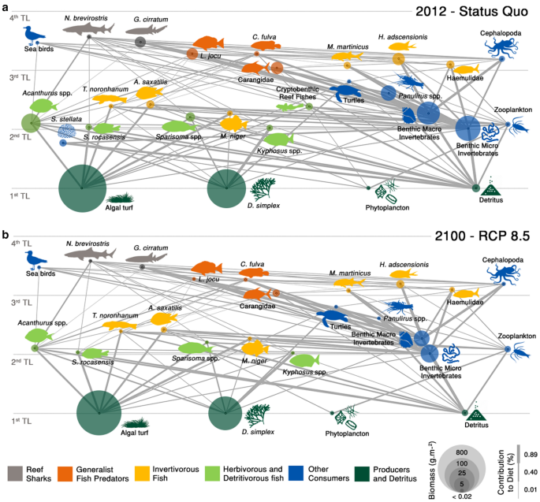
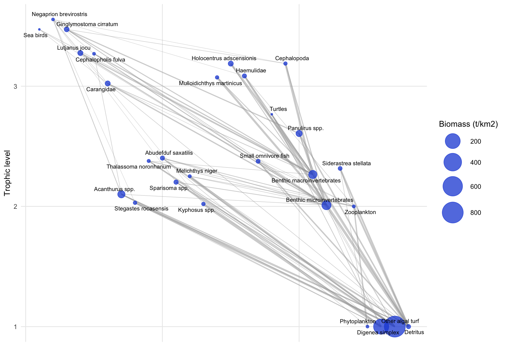
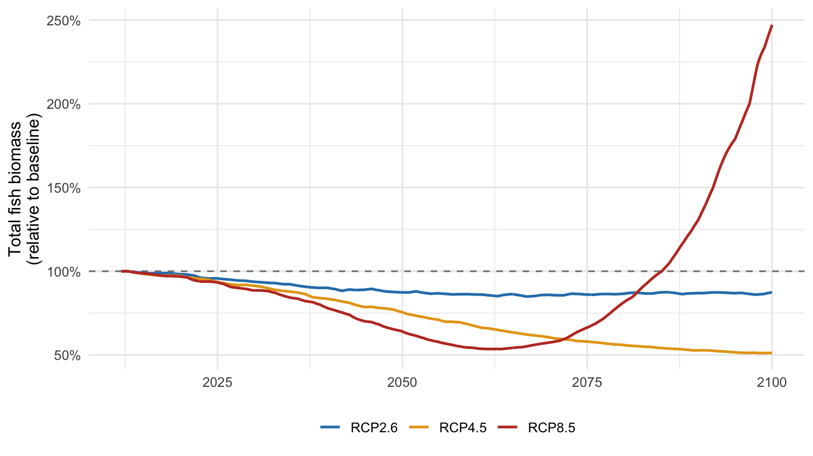

Code
library(Rpath)
library(data.table)
library(ggplot2)
cat("Rpath version:", as.character(packageVersion("Rpath")), "\n")Rpath version: 1.1.0 Leonardo Capitani
August 11, 2026
August 28, 2026
Ecopath with Ecosim (EwE) is the most widely used food-web modelling framework in fisheries and marine ecology, and for most of its life it has been used through a Windows GUI. That is a problem for reproducibility: a model built by clicking is hard to version, hard to review, and hard to rerun.
Rpath is an R implementation of the same equations. This notebook introduces the framework, then rebuilds a real published model — the Rocas Atoll food web from Capitani et al. 2022 — entirely in code, and runs it forward under warming scenarios. I am the first author of that paper, so I am rebuilding my own model here, which also makes this an honest test of whether my own archived inputs are complete enough to reconstruct it.
Ecopath is a mass-balance snapshot of a food web. It assumes that, over the period described, production of each group is accounted for by everything that removes it. The framework goes back to Polovina (1984) and was developed into its modern form by Christensen and Pauly (1992) and Christensen and Walters (2004).
The first master equation says production is either eaten, caught, exported, or accumulated:
\[ B_i \cdot \left(\frac{P}{B}\right)_i \cdot EE_i \;=\; \sum_{j} B_j \cdot \left(\frac{Q}{B}\right)_j \cdot DC_{ji} \;+\; Y_i \;+\; E_i \;+\; BA_i \]
where \(B\) is biomass, \(P/B\) production per unit biomass (equal to total mortality \(Z\) under steady state), \(Q/B\) consumption per unit biomass, \(DC_{ji}\) the fraction of prey \(i\) in predator \(j\)’s diet, \(Y\) the fishery catch, \(E\) net migration, \(BA\) biomass accumulation, and \(EE\) the ecotrophic efficiency — the fraction of production used inside the system.
The second is an energy balance for each consumer:
\[ Q_i \;=\; P_i \;+\; R_i \;+\; U_i \]
consumption equals production plus respiration plus unassimilated food.
The practical consequence is what makes Ecopath useful: for every group you supply three of the four quantities \(B\), \(P/B\), \(Q/B\), \(EE\), and the model solves for the fourth. EE is the one that is hardest to measure and easiest to leave for the model to estimate.
A model is balanced when \(EE \le 1\) for every group. \(EE > 1\) means the food web demands more of a group than it can produce — the model is asking a prey population to be eaten more than once. Getting from an unbalanced first draft to a balanced model is most of the work in any EwE study.
Ecosim (Walters et al. 1997) makes the snapshot dynamic. It re-expresses the same web as coupled differential equations,
\[ \frac{dB_i}{dt} \;=\; g_i \sum_j Q_{ji} \;-\; \sum_j Q_{ij} \;+\; I_i \;-\; (M0_i + F_i + e_i)\,B_i \]
with \(g_i\) the growth efficiency, and predation rates set by foraging arena theory: prey are split into a vulnerable and an invulnerable pool, and the exchange rate between them (the vulnerability, \(v\)) decides whether a predator–prey link is top-down (\(v\) large) or bottom-up (\(v\) near 1) controlled. Vulnerabilities are the main tuning parameters when fitting Ecosim to time series.
Rpath is the R implementation, developed at NOAA’s Ecosystem Dynamics and Assessment Branch. It reproduces the Ecopath algorithm and the Ecosim differential equations in C++ under an R interface, and it is the reference for reproducible EwE work (Lucey et al. 2020).
Authors of the package — Kerim Aydin, Sean Lucey, Sarah Gaichas, Sarah Weisberg and Andy Whitehouse, with contributions from Bia Dias, Ron Klasky, Andy Beet and Max Grezlik (Aydin et al. 2026). The package documentation and vignette are at noaa-edab.github.io/Rpath.
library(Rpath)
library(data.table)
library(ggplot2)
cat("Rpath version:", as.character(packageVersion("Rpath")), "\n")Rpath version: 1.1.0 The workflow has three objects: a parameter object (create.rpath.params), a balanced model (rpath), and a scenario (rsim.scenario) that you run forward with rsim.run.
Rocas Atoll is the only atoll in the South Atlantic, a fully protected no-take reserve off north-eastern Brazil. The published model has 28 functional groups: 16 fish groups, sea birds, turtles, cephalopods, lobsters, two benthic invertebrate groups, corals, zooplankton, phytoplankton, two algal groups, and detritus.
Figure 2 of the paper shows the whole web, in the balanced 2012 state and under the warmest 2100 projection:

The inputs below come from the archived model in my repository Atoll_Rocas_project: the basic estimates and diet matrix that the published Ecopath model was built from.
D <- "data/"
basic <- fread(paste0(D, "rocas_basic_input.csv"))
diet <- fread(paste0(D, "rocas_diet.csv"))
knitr::kable(
basic[, .(Group, Type, `B (t/km2)` = round(Biomass, 3),
`P/B (/yr)` = PB, `Q/B (/yr)` = QB,
`EE published` = round(EE_published, 3),
`BA (t/km2/yr)` = round(BioAcc, 3))],
caption = "Basic inputs of the published Rocas Atoll model. Type 0 = consumer, 1 = producer, 2 = detritus."
)| Group | Type | B (t/km2) | P/B (/yr) | Q/B (/yr) | EE published | BA (t/km2/yr) |
|---|---|---|---|---|---|---|
| Sea birds | 0 | 0.020 | 5.400 | 80.00 | 0.000 | 0.000 |
| Negaprion brevirostris | 0 | 0.170 | 0.228 | 3.70 | 0.000 | 0.000 |
| Ginglymostoma cirratum | 0 | 1.800 | 0.217 | 3.60 | 0.820 | 0.320 |
| Lutjanus jocu | 0 | 2.220 | 0.522 | 6.30 | 0.005 | 0.000 |
| Cephalopholis fulva | 0 | 0.200 | 0.650 | 5.51 | 0.948 | 0.060 |
| Carangidae | 0 | 2.120 | 0.618 | 13.20 | 0.602 | 0.636 |
| Acanthurus spp. | 0 | 9.860 | 0.828 | 12.90 | 0.278 | -0.246 |
| Stegastes rocasensis | 0 | 0.460 | 1.250 | 17.10 | 0.675 | 0.028 |
| Thalassoma noronhanum | 0 | 0.200 | 1.192 | 16.40 | 0.789 | -0.005 |
| Abudefduf saxatilis | 0 | 0.990 | 0.892 | 13.00 | 0.451 | -0.050 |
| Sparisoma spp. | 0 | 1.130 | 0.648 | 7.20 | 0.197 | 0.113 |
| Melichthys niger | 0 | 0.270 | 0.764 | 11.60 | 0.515 | 0.081 |
| Kyphosus spp. | 0 | 0.460 | 0.621 | 24.40 | 0.111 | 0.000 |
| Mulloidichthys martinicus | 0 | 0.416 | 0.719 | 11.10 | 0.601 | 0.166 |
| Holocentrus adscensionis | 0 | 2.118 | 0.750 | 8.30 | 0.977 | 0.593 |
| Haemulidae | 0 | 0.962 | 0.792 | 11.60 | 0.837 | 0.125 |
| Small omnivore fish | 0 | 0.790 | 1.870 | 10.57 | 0.265 | -0.237 |
| Turtles | 0 | 0.022 | 0.290 | 2.35 | 0.000 | 0.000 |
| Cephalopoda | 0 | 0.405 | 6.400 | 36.50 | 0.948 | 0.000 |
| Panulirus spp. | 0 | 5.100 | 1.280 | 7.40 | 0.357 | 0.000 |
| Benthic macroinvertebrates | 0 | 16.704 | 3.800 | 10.00 | 0.900 | 0.000 |
| Benthic microinvertebrates | 0 | 25.690 | 4.940 | 16.69 | 0.850 | 0.000 |
| Siderastrea stellata | 0 | 0.711 | 1.660 | 9.40 | 0.000 | 0.000 |
| Zooplankton | 0 | 0.238 | 87.000 | 160.00 | 0.935 | 0.000 |
| Phytoplankton | 1 | 0.130 | 109.500 | NA | 0.701 | 0.000 |
| Digenea simplex | 1 | 211.638 | 274.000 | NA | 0.001 | 0.000 |
| Other algal turf | 1 | 802.312 | 323.000 | NA | 0.000 | 0.000 |
| Detritus | 2 | 1.000 | NA | NA | 0.002 | 0.000 |
Rebuilding an archived model is never a clean copy, and this one is a good illustration of why:
A third trap is subtler: group 17 is called “Cryptobenthic reef fishes” in the diet file but “Small omnivore fish” in the basic-input file. Joining the two tables by name silently drops every predation link on that group and produces a negative ecotrophic efficiency. Joining by group number is the fix. This is the kind of error that is invisible unless you check the output against the published values, which is exactly what we do below.
build_rocas <- function(B_thal = 0.20, B_phyto = 0.13, zero_BA = FALSE,
export_algae = FALSE) {
basic <- fread(paste0(D, "rocas_basic_input.csv"))
diet <- fread(paste0(D, "rocas_diet.csv"))
basic[Group == "Thalassoma noronhanum", Biomass := B_thal]
basic[Group == "Phytoplankton", Biomass := B_phyto]
if (isTRUE(zero_BA)) basic[, BioAcc := 0]
groups <- basic$Group; types <- basic$Type
# prey rows identified by GROUP NUMBER, not by name (see note above)
dm <- as.matrix(diet[, 3:26]); dm[is.na(dm)] <- 0
rownames(dm) <- c(groups, "Import")
colnames(dm) <- groups[1:24]
dm[, "Zooplankton"] <- 0
dm["Phytoplankton", "Zooplankton"] <- 0.4
dm["Detritus", "Zooplankton"] <- 0.6
dm <- sweep(dm, 2, colSums(dm), "/") # published table is rounded
# Rocas is a no-take reserve, but Rpath requires >= 1 fleet: add a zero-catch one
p <- create.rpath.params(group = c(groups, "No-take reserve"),
type = c(types, 3))
pad <- function(x, fill = NA) c(x, fill)
p$model[, Biomass := pad(basic$Biomass)]
p$model[, PB := pad(basic$PB)]
p$model[, QB := pad(ifelse(basic$Type == 0, basic$QB, NA))]
p$model[, EE := NA_real_]
p$model[, ProdCons := NA_real_]
p$model[, BioAcc := pad(ifelse(basic$Type == 2, NA, basic$BioAcc))]
p$model[, Unassim := pad(ifelse(basic$Type == 0, 0.2, 0))]
p$model[, Detritus := pad(ifelse(basic$Type == 2, 0, 1))]
p$model[, `No-take reserve` := 0][, `No-take reserve.disc` := 0]
p$model[Type == 3, `:=`(`No-take reserve` = NA, `No-take reserve.disc` = NA,
Detritus = 0)]
if (isTRUE(export_algae))
p$model[Group %in% c("Digenea simplex", "Other algal turf"), Detritus := 0]
for (pred in colnames(dm)) p$diet[[pred]] <- dm[as.character(p$diet$Group), pred]
p$diet[is.na(p$diet)] <- 0
m <- rpath(p, eco.name = "Rocas Atoll")
attr(m, "params") <- p
m
}
rocas0 <- build_rocas()
cat("groups with EE > 1:", sum(rocas0$EE[1:28] > 1), "\n")groups with EE > 1: 2 The published model supplied \(B\), \(P/B\) and \(Q/B\) and let Ecopath estimate \(EE\). So the honest test is: feed Rpath the same three, and compare the \(EE\) it estimates against the published values.
cmp <- data.table(Group = basic$Group,
Published = round(basic$EE_published, 3),
Rpath = round(rocas0$EE[1:28], 3))
cmp[, Difference := round(Rpath - Published, 3)]
knitr::kable(cmp, caption = "Ecotrophic efficiency: published model vs this rebuild.")| Group | Published | Rpath | Difference |
|---|---|---|---|
| Sea birds | 0.000 | 0.000 | 0.000 |
| Negaprion brevirostris | 0.000 | 0.000 | 0.000 |
| Ginglymostoma cirratum | 0.820 | 0.820 | 0.000 |
| Lutjanus jocu | 0.005 | 0.192 | 0.187 |
| Cephalopholis fulva | 0.948 | 0.950 | 0.002 |
| Carangidae | 0.602 | 0.600 | -0.002 |
| Acanthurus spp. | 0.278 | 0.275 | -0.003 |
| Stegastes rocasensis | 0.675 | 0.667 | -0.008 |
| Thalassoma noronhanum | 0.789 | 1.340 | 0.551 |
| Abudefduf saxatilis | 0.451 | 0.432 | -0.019 |
| Sparisoma spp. | 0.197 | 0.198 | 0.001 |
| Melichthys niger | 0.515 | 0.516 | 0.001 |
| Kyphosus spp. | 0.111 | 0.111 | 0.000 |
| Mulloidichthys martinicus | 0.601 | 0.599 | -0.002 |
| Holocentrus adscensionis | 0.977 | 0.979 | 0.002 |
| Haemulidae | 0.837 | 0.849 | 0.012 |
| Small omnivore fish | 0.265 | 0.266 | 0.001 |
| Turtles | 0.000 | 0.996 | 0.996 |
| Cephalopoda | 0.948 | 0.892 | -0.056 |
| Panulirus spp. | 0.357 | 0.347 | -0.010 |
| Benthic macroinvertebrates | 0.900 | 0.899 | -0.001 |
| Benthic microinvertebrates | 0.850 | 0.839 | -0.011 |
| Siderastrea stellata | 0.000 | 0.000 | 0.000 |
| Zooplankton | 0.935 | 0.490 | -0.445 |
| Phytoplankton | 0.701 | 1.234 | 0.533 |
| Digenea simplex | 0.001 | 0.001 | 0.000 |
| Other algal turf | 0.000 | 0.000 | 0.000 |
| Detritus | 0.002 | 0.002 | 0.000 |
groups matching within 0.02: 22 of 28Twenty-two of 28 groups reproduce to within 0.02. The six that do not are traceable to the two data problems above — the patched zooplankton column changes the predation on zooplankton and phytoplankton, and rounding in the diet matrix propagates into the groups with the tightest budgets. Two of them, Thalassoma noronhanum and phytoplankton, come out above 1, so this rebuild is not balanced as it stands.
The classic Ecopath balancing move is to change the fewest inputs you can defend, and say which ones. Both offending groups need slightly more biomass than the rounded diet matrix implies, so I raise those two biomasses and leave the other 26 groups untouched.
max EE: 0.996 | groups with EE > 1: 0 | Group | Trophic level | Biomass (t/km2) | EE |
|---|---|---|---|
| Negaprion brevirostris | 3.56 | 0.170 | 0.000 |
| Sea birds | 3.47 | 0.020 | 0.000 |
| Ginglymostoma cirratum | 3.47 | 1.800 | 0.820 |
| Lutjanus jocu | 3.28 | 2.220 | 0.192 |
| Cephalopholis fulva | 3.27 | 0.200 | 0.950 |
| Holocentrus adscensionis | 3.19 | 2.118 | 0.979 |
| Cephalopoda | 3.19 | 0.405 | 0.892 |
| Haemulidae | 3.09 | 0.962 | 0.849 |
| Mulloidichthys martinicus | 3.07 | 0.416 | 0.599 |
| Carangidae | 3.02 | 2.120 | 0.600 |
The model is now balanced, and the trophic levels match the published ones closely: lemon sharks and nurse sharks at the top around TL 3.5, the herbivores just above 2, and the algae and detritus at 1.
nodes <- data.table(Group = rocas$Group[1:28], TL = rocas$TL[1:28],
B = rocas$Biomass[1:28])[, x := seq_len(.N)]
dm <- as.matrix(attr(rocas, "params")$diet[, -1])
rownames(dm) <- as.character(attr(rocas, "params")$diet$Group)
links <- rbindlist(lapply(colnames(dm), function(pred) {
v <- dm[, pred]; v <- v[v > 0.05 & names(v) != "Import"]
if (!length(v)) return(NULL)
data.table(prey = names(v), pred = pred, w = as.numeric(v))
}))
links <- merge(links, nodes[, .(prey = Group, x0 = x, y0 = TL)], by = "prey")
links <- merge(links, nodes[, .(pred = Group, x1 = x, y1 = TL)], by = "pred")
ggplot() +
geom_segment(data = links, aes(x0, y0, xend = x1, yend = y1, linewidth = w),
colour = "grey65", alpha = 0.5) +
scale_linewidth(range = c(0.2, 1.6), guide = "none") +
geom_point(data = nodes, aes(x, TL, size = B), colour = "#1d4ed8", alpha = 0.75) +
scale_size_area(max_size = 13, trans = "sqrt", name = "Biomass (t/km2)") +
ggrepel::geom_text_repel(data = nodes, aes(x, TL, label = Group),
size = 2.7, max.overlaps = 40) +
labs(x = NULL, y = "Trophic level") +
theme_minimal(base_size = 11) +
theme(axis.text.x = element_blank(), panel.grid.minor = element_blank())
Two changes are needed before the model can be run forward.
Biomass accumulation is switched off. The Ecopath snapshot records non-zero \(BA\) for several groups, meaning the system was not in steady state in 2012. Carried into Ecosim, those trends compound for 89 years and the model runs away. A stationary baseline is the standard starting point for scenario work.
Unconsumed algal production is exported rather than sent to detritus. This is the interesting one. The two algal groups have very high turnover (\(P/B\) of 274 and 323 per year) and almost nothing eats them (\(EE < 0.001\)), so their unconsumed production is enormous — around \(2.6 \times 10^5\) t/km²/yr for turf alone. Ecopath does not mind, because the surplus simply leaves the system. Ecosim does mind: routed into a detritus pool of 1 t/km², it floods the pool, the detritivores explode on it, and the whole web follows. Routing that surplus out of the system instead — biologically, turf production washing off an oceanic atoll — gives a stable baseline.
Exporting the algal surplus removes the detritivores’ main documented food supply, so the detritus group’s own \(EE\) rises above 1 in the static solution. There is no configuration of this archived model that is simultaneously balanced in Ecopath and stationary in Ecosim; the published study fitted vulnerabilities to time series to get there, and that fitting is not fully in the archive. Everything below should therefore be read as relative to the unforced baseline, not as a reproduction of the published projections.
rocas_sim <- build_rocas(B_thal = 0.30, B_phyto = 0.17,
zero_BA = TRUE, export_algae = TRUE)Each group gets a thermal performance curve built from its observed thermal range — the 10th percentile, optimum, and 90th percentile of the temperatures at which it occurs, taken from the paper’s compilation. Performance is Gaussian around the optimum, scaled so that it halves at the 10th and 90th percentiles, and it multiplies the group’s search rate, so a group pushed past its optimum forages less effectively.
therm <- fread(paste0(D, "rocas_thermal_ranges.csv"))
therm[, Species := fifelse(Species == "Benthic macroinvert.", "Benthic macroinvertebrates",
fifelse(Species == "Benthic microinvert.", "Benthic microinvertebrates",
fifelse(Species == "Cryptobenthic reef fishes", "Small omnivore fish",
fifelse(Species == "Algal turf", "Other algal turf", Species))))]
tw <- dcast(therm, Species ~ class, value.var = "temperature")
thermal_mult <- function(Temp, opt, p10, p90) {
sL <- pmax((opt - p10) / 1.1774, 0.5) # 1.1774 sigma -> performance = 0.5
sR <- pmax((p90 - opt) / 1.1774, 0.5)
exp(-0.5 * ((Temp - opt) / ifelse(Temp < opt, sL, sR))^2)
}
sst <- fread(paste0(D, "rocas_sst_rcp.csv"))
setnames(sst, c("Year", "RCP2.6", "RCP4.5", "RCP8.5"))
knitr::kable(sst[Year %in% c(2012, 2050, 2100)],
caption = "Projected sea surface temperature at Rocas Atoll (deg C).")| Year | RCP2.6 | RCP4.5 | RCP8.5 |
|---|---|---|---|
| 2012 | 27.32164 | 27.34236 | 27.19856 |
| 2050 | 27.78806 | 28.22839 | 28.46531 |
| 2100 | 27.79162 | 28.62535 | 30.48841 |
run_scenario <- function(m, scen = NULL) {
p <- attr(m, "params")
s <- rsim.scenario(m, p, years = sst$Year)
if (!is.null(scen)) {
Tm <- rep(sst[[scen]], each = 12)
for (g in tw$Species) {
if (!g %in% colnames(s$forcing$ForcedSearch)) next
row <- tw[Species == g]
f <- thermal_mult(Tm, row$opti, row$perc10, row$perc90)
f <- f / f[1] # relative to 2012
n <- nrow(s$forcing$ForcedSearch)
s$forcing$ForcedSearch[, g] <- c(f, rep(tail(f, 1), n))[1:n]
}
}
rsim.run(s, method = "RK4", years = sst$Year)
}
runs <- list(Baseline = run_scenario(rocas_sim, NULL))
for (sc in c("RCP2.6", "RCP4.5", "RCP8.5")) runs[[sc]] <- run_scenario(rocas_sim, sc)Before believing any scenario, check that the unforced run stays put. If the baseline drifts, every “effect” you measure is partly just drift.
fish <- c("Negaprion brevirostris","Ginglymostoma cirratum","Lutjanus jocu",
"Cephalopholis fulva","Carangidae","Acanthurus spp.","Stegastes rocasensis",
"Thalassoma noronhanum","Abudefduf saxatilis","Sparisoma spp.",
"Melichthys niger","Kyphosus spp.","Mulloidichthys martinicus",
"Holocentrus adscensionis","Haemulidae","Small omnivore fish")
tot_fish <- function(r) rowSums(r$out_Biomass[, fish, drop = FALSE])
b0 <- tot_fish(runs$Baseline)
cat(sprintf("baseline total fish biomass: %.2f t/km2 (2012) -> %.2f t/km2 (2100), %+.1f%%\n",
b0[1], tail(b0, 1), 100 * (tail(b0, 1) / b0[1] - 1)))baseline total fish biomass: 24.27 t/km2 (2012) -> 24.12 t/km2 (2100), -0.6%The unforced run moves by well under one percent over 89 years, so the baseline is stationary and anything we see under forcing is the forcing.
dt <- rbindlist(lapply(names(runs)[-1], function(sc) {
data.table(Year = sst$Year[1] + (seq_along(b0) - 1) / 12,
Scenario = sc,
Relative = tot_fish(runs[[sc]]) / b0)
}))
ggplot(dt[Year <= 2100], aes(Year, Relative, colour = Scenario)) +
geom_hline(yintercept = 1, linetype = 2, colour = "grey50") +
geom_line(linewidth = 0.9) +
scale_colour_manual(values = c("RCP2.6" = "#2c7fb8", "RCP4.5" = "#e6a419",
"RCP8.5" = "#c0392b")) +
scale_y_continuous(labels = scales::percent) +
labs(y = "Total fish biomass\n(relative to baseline)", x = NULL) +
theme_minimal(base_size = 12) +
theme(legend.position = "bottom", legend.title = element_blank())
end <- length(b0)
res <- data.table(Scenario = names(runs)[-1],
`SST 2100 (deg C)` = round(unlist(sst[.N, .(RCP2.6, RCP4.5, RCP8.5)]), 2),
`Total fish vs baseline` =
sprintf("%+.1f%%", sapply(names(runs)[-1],
function(sc) 100 * (tot_fish(runs[[sc]])[end] / b0[end] - 1))))
knitr::kable(res, caption = "Total fish biomass in 2100 relative to the unforced baseline.")| Scenario | SST 2100 (deg C) | Total fish vs baseline |
|---|---|---|
| RCP2.6 | 27.79 | -12.9% |
| RCP4.5 | 28.63 | -49.0% |
| RCP8.5 | 30.49 | +164.8% |
Under RCP 2.6 the fish community loses around a tenth of its biomass, and under RCP 4.5 about half. The direction matches the published conclusion — warming simplifies this reef and takes biomass out of it — even though the magnitudes are not directly comparable, for the reasons in the warning above.
RCP 8.5 does not continue the pattern. It reports an increase, and the group-level results show why.
ratio85 <- runs$RCP8.5$out_Biomass[end, fish] / runs$Baseline$out_Biomass[end, fish]
knitr::kable(data.table(Group = names(ratio85),
`x baseline in 2100` = round(as.numeric(ratio85), 3))[order(-`x baseline in 2100`)],
caption = "Fish groups under RCP 8.5, relative to baseline.")| Group | x baseline in 2100 |
|---|---|
| Carangidae | 14.513 |
| Abudefduf saxatilis | 9.386 |
| Holocentrus adscensionis | 9.383 |
| Lutjanus jocu | 1.680 |
| Mulloidichthys martinicus | 0.253 |
| Negaprion brevirostris | 0.010 |
| Melichthys niger | 0.004 |
| Cephalopholis fulva | 0.001 |
| Ginglymostoma cirratum | 0.000 |
| Acanthurus spp. | 0.000 |
| Stegastes rocasensis | 0.000 |
| Thalassoma noronhanum | 0.000 |
| Sparisoma spp. | 0.000 |
| Kyphosus spp. | 0.000 |
| Haemulidae | 0.000 |
| Small omnivore fish | 0.000 |
Thirteen of the sixteen fish groups go to essentially zero, while three — Carangidae, Abudefduf saxatilis and Holocentrus adscensionis — increase by roughly an order of magnitude, and those three carry the total. That is competitive release: once nearly every other consumer collapses, the groups whose thermal optima sit highest inherit the entire web, and nothing in the model limits them.
This is not a projection, it is a model leaving its valid range. Ecosim is calibrated around a balanced snapshot, and its foraging-arena parameters describe how the web behaves near that state. Push every consumer far outside its thermal range at once and you are extrapolating a local description into a regime it was never fitted for — the arithmetic keeps working and the ecology stops.
This is why the published study fitted vulnerabilities to observed time series, ran Monte Carlo trials over the input parameters to propagate uncertainty, and reported changes by trophic guild rather than headline totals. A single deterministic run, as here, is a teaching device, not evidence.
---
title: "Ecopath with Ecosim, and its R counterpart Rpath"
author: "Leonardo Capitani"
date: "08/11/2026"
date-modified: last-modified
execute:
echo: true
warning: false
message: false
format:
html:
toc: true
code-fold: true
code-tools: true
code-link: true
bibliography: references.bib
editor: visual
editor_options:
chunk_output_type: console
---
## Why this notebook
Ecopath with Ecosim (EwE) is the most widely used food-web modelling framework in fisheries and marine ecology, and for most of its life it has been used through a Windows GUI. That is a problem for reproducibility: a model built by clicking is hard to version, hard to review, and hard to rerun.
[Rpath](https://github.com/NOAA-EDAB/Rpath) is an R implementation of the same equations. This notebook introduces the framework, then rebuilds a real published model — the Rocas Atoll food web from [Capitani et al. 2022](https://doi.org/10.1007/s10021-021-00691-z) — entirely in code, and runs it forward under warming scenarios. I am the first author of that paper, so I am rebuilding my own model here, which also makes this an honest test of whether my own archived inputs are complete enough to reconstruct it.
## Part 1 — What Ecopath is
Ecopath is a **mass-balance snapshot** of a food web. It assumes that, over the period described, production of each group is accounted for by everything that removes it. The framework goes back to @polovina1984 and was developed into its modern form by @christensen1992 and @christensen2004.
The first master equation says production is either eaten, caught, exported, or accumulated:
$$
B_i \cdot \left(\frac{P}{B}\right)_i \cdot EE_i \;=\; \sum_{j} B_j \cdot \left(\frac{Q}{B}\right)_j \cdot DC_{ji} \;+\; Y_i \;+\; E_i \;+\; BA_i
$$
where $B$ is biomass, $P/B$ production per unit biomass (equal to total mortality $Z$ under steady state), $Q/B$ consumption per unit biomass, $DC_{ji}$ the fraction of prey $i$ in predator $j$'s diet, $Y$ the fishery catch, $E$ net migration, $BA$ biomass accumulation, and $EE$ the **ecotrophic efficiency** — the fraction of production used inside the system.
The second is an energy balance for each consumer:
$$
Q_i \;=\; P_i \;+\; R_i \;+\; U_i
$$
consumption equals production plus respiration plus unassimilated food.
The practical consequence is what makes Ecopath useful: for every group you supply **three of the four** quantities $B$, $P/B$, $Q/B$, $EE$, and the model solves for the fourth. `EE` is the one that is hardest to measure and easiest to leave for the model to estimate.
::: callout-important
## The balance criterion
A model is *balanced* when $EE \le 1$ for every group. $EE > 1$ means the food web demands more of a group than it can produce — the model is asking a prey population to be eaten more than once. Getting from an unbalanced first draft to a balanced model is most of the work in any EwE study.
:::
**Ecosim** [@walters1997] makes the snapshot dynamic. It re-expresses the same web as coupled differential equations,
$$
\frac{dB_i}{dt} \;=\; g_i \sum_j Q_{ji} \;-\; \sum_j Q_{ij} \;+\; I_i \;-\; (M0_i + F_i + e_i)\,B_i
$$
with $g_i$ the growth efficiency, and predation rates set by **foraging arena theory**: prey are split into a vulnerable and an invulnerable pool, and the exchange rate between them (the *vulnerability*, $v$) decides whether a predator–prey link is top-down ($v$ large) or bottom-up ($v$ near 1) controlled. Vulnerabilities are the main tuning parameters when fitting Ecosim to time series.
## Part 2 — Rpath
Rpath is the R implementation, developed at NOAA's Ecosystem Dynamics and Assessment Branch. It reproduces the Ecopath algorithm and the Ecosim differential equations in C++ under an R interface, and it is the reference for reproducible EwE work [@lucey2020].
**Authors of the package** — Kerim Aydin, Sean Lucey, Sarah Gaichas, Sarah Weisberg and Andy Whitehouse, with contributions from Bia Dias, Ron Klasky, Andy Beet and Max Grezlik [@rpath]. The package documentation and vignette are at [noaa-edab.github.io/Rpath](https://noaa-edab.github.io/Rpath/articles/Rpath.html).
```{r setup}
library(Rpath)
library(data.table)
library(ggplot2)
cat("Rpath version:", as.character(packageVersion("Rpath")), "\n")
```
The workflow has three objects: a **parameter object** (`create.rpath.params`), a **balanced model** (`rpath`), and a **scenario** (`rsim.scenario`) that you run forward with `rsim.run`.
## Part 3 — Rebuilding the Rocas Atoll model
Rocas Atoll is the only atoll in the South Atlantic, a fully protected no-take reserve off north-eastern Brazil. The published model has **28 functional groups**: 16 fish groups, sea birds, turtles, cephalopods, lobsters, two benthic invertebrate groups, corals, zooplankton, phytoplankton, two algal groups, and detritus.
Figure 2 of the paper shows the whole web, in the balanced 2012 state and under the warmest 2100 projection:
, reproduced here by the first author.](rocas_foodweb_fig2.png){#fig-web fig-align="center" width="90%"}
The inputs below come from the archived model in my repository [`Atoll_Rocas_project`](https://github.com/leomarameo7/Atoll_Rocas_project): the basic estimates and diet matrix that the published Ecopath model was built from.
```{r inputs}
D <- "data/"
basic <- fread(paste0(D, "rocas_basic_input.csv"))
diet <- fread(paste0(D, "rocas_diet.csv"))
knitr::kable(
basic[, .(Group, Type, `B (t/km2)` = round(Biomass, 3),
`P/B (/yr)` = PB, `Q/B (/yr)` = QB,
`EE published` = round(EE_published, 3),
`BA (t/km2/yr)` = round(BioAcc, 3))],
caption = "Basic inputs of the published Rocas Atoll model. Type 0 = consumer, 1 = producer, 2 = detritus."
)
```
### Two data problems worth naming
Rebuilding an archived model is never a clean copy, and this one is a good illustration of why:
1. **The archived diet matrix is rounded to two decimals**, so predator columns sum to 0.99 or 1.05 rather than 1. Rpath requires columns summing to exactly 1, so each column is renormalised.
2. **The zooplankton column is incomplete** in the archived CSV (it sums to 0.4 and shows zooplankton eating itself). The source spreadsheet gives the intended diet — 0.4 phytoplankton, 0.6 detritus — which is what I use.
A third trap is subtler: group 17 is called **"Cryptobenthic reef fishes"** in the diet file but **"Small omnivore fish"** in the basic-input file. Joining the two tables by name silently drops every predation link on that group and produces a negative ecotrophic efficiency. Joining by group number is the fix. This is the kind of error that is invisible unless you check the output against the published values, which is exactly what we do below.
```{r build-model}
build_rocas <- function(B_thal = 0.20, B_phyto = 0.13, zero_BA = FALSE,
export_algae = FALSE) {
basic <- fread(paste0(D, "rocas_basic_input.csv"))
diet <- fread(paste0(D, "rocas_diet.csv"))
basic[Group == "Thalassoma noronhanum", Biomass := B_thal]
basic[Group == "Phytoplankton", Biomass := B_phyto]
if (isTRUE(zero_BA)) basic[, BioAcc := 0]
groups <- basic$Group; types <- basic$Type
# prey rows identified by GROUP NUMBER, not by name (see note above)
dm <- as.matrix(diet[, 3:26]); dm[is.na(dm)] <- 0
rownames(dm) <- c(groups, "Import")
colnames(dm) <- groups[1:24]
dm[, "Zooplankton"] <- 0
dm["Phytoplankton", "Zooplankton"] <- 0.4
dm["Detritus", "Zooplankton"] <- 0.6
dm <- sweep(dm, 2, colSums(dm), "/") # published table is rounded
# Rocas is a no-take reserve, but Rpath requires >= 1 fleet: add a zero-catch one
p <- create.rpath.params(group = c(groups, "No-take reserve"),
type = c(types, 3))
pad <- function(x, fill = NA) c(x, fill)
p$model[, Biomass := pad(basic$Biomass)]
p$model[, PB := pad(basic$PB)]
p$model[, QB := pad(ifelse(basic$Type == 0, basic$QB, NA))]
p$model[, EE := NA_real_]
p$model[, ProdCons := NA_real_]
p$model[, BioAcc := pad(ifelse(basic$Type == 2, NA, basic$BioAcc))]
p$model[, Unassim := pad(ifelse(basic$Type == 0, 0.2, 0))]
p$model[, Detritus := pad(ifelse(basic$Type == 2, 0, 1))]
p$model[, `No-take reserve` := 0][, `No-take reserve.disc` := 0]
p$model[Type == 3, `:=`(`No-take reserve` = NA, `No-take reserve.disc` = NA,
Detritus = 0)]
if (isTRUE(export_algae))
p$model[Group %in% c("Digenea simplex", "Other algal turf"), Detritus := 0]
for (pred in colnames(dm)) p$diet[[pred]] <- dm[as.character(p$diet$Group), pred]
p$diet[is.na(p$diet)] <- 0
m <- rpath(p, eco.name = "Rocas Atoll")
attr(m, "params") <- p
m
}
rocas0 <- build_rocas()
cat("groups with EE > 1:", sum(rocas0$EE[1:28] > 1), "\n")
```
### Does the rebuild reproduce the published model?
The published model supplied $B$, $P/B$ and $Q/B$ and let Ecopath estimate $EE$. So the honest test is: feed Rpath the same three, and compare the $EE$ it estimates against the published values.
```{r ee-compare}
cmp <- data.table(Group = basic$Group,
Published = round(basic$EE_published, 3),
Rpath = round(rocas0$EE[1:28], 3))
cmp[, Difference := round(Rpath - Published, 3)]
knitr::kable(cmp, caption = "Ecotrophic efficiency: published model vs this rebuild.")
cat("groups matching within 0.02:", sum(abs(cmp$Difference) < 0.02), "of 28\n")
```
Twenty-two of 28 groups reproduce to within 0.02. The six that do not are traceable to the two data problems above — the patched zooplankton column changes the predation on zooplankton and phytoplankton, and rounding in the diet matrix propagates into the groups with the tightest budgets. Two of them, *Thalassoma noronhanum* and phytoplankton, come out above 1, so this rebuild is **not balanced** as it stands.
### Balancing
The classic Ecopath balancing move is to change the fewest inputs you can defend, and say which ones. Both offending groups need slightly more biomass than the rounded diet matrix implies, so I raise those two biomasses and leave the other 26 groups untouched.
```{r balance}
rocas <- build_rocas(B_thal = 0.30, B_phyto = 0.17)
cat("max EE:", round(max(rocas$EE[1:28]), 3),
"| groups with EE > 1:", sum(rocas$EE[1:28] > 1), "\n")
knitr::kable(
data.table(Group = basic$Group,
`Trophic level` = round(rocas$TL[1:28], 2),
`Biomass (t/km2)` = round(rocas$Biomass[1:28], 3),
EE = round(rocas$EE[1:28], 3))[order(-`Trophic level`)][1:10],
caption = "The ten highest trophic levels in the balanced rebuild."
)
```
The model is now balanced, and the trophic levels match the published ones closely: lemon sharks and nurse sharks at the top around TL 3.5, the herbivores just above 2, and the algae and detritus at 1.
```{r webplot, fig.height=6.5, fig.width=9.5, fig.cap="The balanced rebuild: every group at its estimated trophic level, sized by biomass, with diet links above 5% drawn. Compare with Figure 2a above."}
nodes <- data.table(Group = rocas$Group[1:28], TL = rocas$TL[1:28],
B = rocas$Biomass[1:28])[, x := seq_len(.N)]
dm <- as.matrix(attr(rocas, "params")$diet[, -1])
rownames(dm) <- as.character(attr(rocas, "params")$diet$Group)
links <- rbindlist(lapply(colnames(dm), function(pred) {
v <- dm[, pred]; v <- v[v > 0.05 & names(v) != "Import"]
if (!length(v)) return(NULL)
data.table(prey = names(v), pred = pred, w = as.numeric(v))
}))
links <- merge(links, nodes[, .(prey = Group, x0 = x, y0 = TL)], by = "prey")
links <- merge(links, nodes[, .(pred = Group, x1 = x, y1 = TL)], by = "pred")
ggplot() +
geom_segment(data = links, aes(x0, y0, xend = x1, yend = y1, linewidth = w),
colour = "grey65", alpha = 0.5) +
scale_linewidth(range = c(0.2, 1.6), guide = "none") +
geom_point(data = nodes, aes(x, TL, size = B), colour = "#1d4ed8", alpha = 0.75) +
scale_size_area(max_size = 13, trans = "sqrt", name = "Biomass (t/km2)") +
ggrepel::geom_text_repel(data = nodes, aes(x, TL, label = Group),
size = 2.7, max.overlaps = 40) +
labs(x = NULL, y = "Trophic level") +
theme_minimal(base_size = 11) +
theme(axis.text.x = element_blank(), panel.grid.minor = element_blank())
```
## Part 4 — Ecosim under warming
Two changes are needed before the model can be run forward.
**Biomass accumulation is switched off.** The Ecopath snapshot records non-zero $BA$ for several groups, meaning the system was not in steady state in 2012. Carried into Ecosim, those trends compound for 89 years and the model runs away. A stationary baseline is the standard starting point for scenario work.
**Unconsumed algal production is exported rather than sent to detritus.** This is the interesting one. The two algal groups have very high turnover ($P/B$ of 274 and 323 per year) and almost nothing eats them ($EE < 0.001$), so their unconsumed production is enormous — around $2.6 \times 10^5$ t/km²/yr for turf alone. Ecopath does not mind, because the surplus simply leaves the system. Ecosim does mind: routed into a detritus pool of 1 t/km², it floods the pool, the detritivores explode on it, and the whole web follows. Routing that surplus out of the system instead — biologically, turf production washing off an oceanic atoll — gives a stable baseline.
::: callout-warning
## The cost of that choice
Exporting the algal surplus removes the detritivores' main documented food supply, so the detritus group's own $EE$ rises above 1 in the static solution. There is no configuration of this archived model that is simultaneously balanced in Ecopath *and* stationary in Ecosim; the published study fitted vulnerabilities to time series to get there, and that fitting is not fully in the archive. Everything below should therefore be read as **relative to the unforced baseline**, not as a reproduction of the published projections.
:::
```{r sim-model}
rocas_sim <- build_rocas(B_thal = 0.30, B_phyto = 0.17,
zero_BA = TRUE, export_algae = TRUE)
```
### The temperature forcing
Each group gets a thermal performance curve built from its observed thermal range — the 10th percentile, optimum, and 90th percentile of the temperatures at which it occurs, taken from the paper's compilation. Performance is Gaussian around the optimum, scaled so that it halves at the 10th and 90th percentiles, and it multiplies the group's **search rate**, so a group pushed past its optimum forages less effectively.
```{r forcing-setup}
therm <- fread(paste0(D, "rocas_thermal_ranges.csv"))
therm[, Species := fifelse(Species == "Benthic macroinvert.", "Benthic macroinvertebrates",
fifelse(Species == "Benthic microinvert.", "Benthic microinvertebrates",
fifelse(Species == "Cryptobenthic reef fishes", "Small omnivore fish",
fifelse(Species == "Algal turf", "Other algal turf", Species))))]
tw <- dcast(therm, Species ~ class, value.var = "temperature")
thermal_mult <- function(Temp, opt, p10, p90) {
sL <- pmax((opt - p10) / 1.1774, 0.5) # 1.1774 sigma -> performance = 0.5
sR <- pmax((p90 - opt) / 1.1774, 0.5)
exp(-0.5 * ((Temp - opt) / ifelse(Temp < opt, sL, sR))^2)
}
sst <- fread(paste0(D, "rocas_sst_rcp.csv"))
setnames(sst, c("Year", "RCP2.6", "RCP4.5", "RCP8.5"))
knitr::kable(sst[Year %in% c(2012, 2050, 2100)],
caption = "Projected sea surface temperature at Rocas Atoll (deg C).")
```
```{r run-scenarios}
run_scenario <- function(m, scen = NULL) {
p <- attr(m, "params")
s <- rsim.scenario(m, p, years = sst$Year)
if (!is.null(scen)) {
Tm <- rep(sst[[scen]], each = 12)
for (g in tw$Species) {
if (!g %in% colnames(s$forcing$ForcedSearch)) next
row <- tw[Species == g]
f <- thermal_mult(Tm, row$opti, row$perc10, row$perc90)
f <- f / f[1] # relative to 2012
n <- nrow(s$forcing$ForcedSearch)
s$forcing$ForcedSearch[, g] <- c(f, rep(tail(f, 1), n))[1:n]
}
}
rsim.run(s, method = "RK4", years = sst$Year)
}
runs <- list(Baseline = run_scenario(rocas_sim, NULL))
for (sc in c("RCP2.6", "RCP4.5", "RCP8.5")) runs[[sc]] <- run_scenario(rocas_sim, sc)
```
### Is the baseline stationary?
Before believing any scenario, check that the unforced run stays put. If the baseline drifts, every "effect" you measure is partly just drift.
```{r baseline-check}
fish <- c("Negaprion brevirostris","Ginglymostoma cirratum","Lutjanus jocu",
"Cephalopholis fulva","Carangidae","Acanthurus spp.","Stegastes rocasensis",
"Thalassoma noronhanum","Abudefduf saxatilis","Sparisoma spp.",
"Melichthys niger","Kyphosus spp.","Mulloidichthys martinicus",
"Holocentrus adscensionis","Haemulidae","Small omnivore fish")
tot_fish <- function(r) rowSums(r$out_Biomass[, fish, drop = FALSE])
b0 <- tot_fish(runs$Baseline)
cat(sprintf("baseline total fish biomass: %.2f t/km2 (2012) -> %.2f t/km2 (2100), %+.1f%%\n",
b0[1], tail(b0, 1), 100 * (tail(b0, 1) / b0[1] - 1)))
```
The unforced run moves by well under one percent over 89 years, so the baseline is stationary and anything we see under forcing is the forcing.
### Results
```{r results-plot, fig.height=4.5, fig.width=8, fig.cap="Total fish biomass under each warming scenario, relative to the unforced baseline in the same year."}
dt <- rbindlist(lapply(names(runs)[-1], function(sc) {
data.table(Year = sst$Year[1] + (seq_along(b0) - 1) / 12,
Scenario = sc,
Relative = tot_fish(runs[[sc]]) / b0)
}))
ggplot(dt[Year <= 2100], aes(Year, Relative, colour = Scenario)) +
geom_hline(yintercept = 1, linetype = 2, colour = "grey50") +
geom_line(linewidth = 0.9) +
scale_colour_manual(values = c("RCP2.6" = "#2c7fb8", "RCP4.5" = "#e6a419",
"RCP8.5" = "#c0392b")) +
scale_y_continuous(labels = scales::percent) +
labs(y = "Total fish biomass\n(relative to baseline)", x = NULL) +
theme_minimal(base_size = 12) +
theme(legend.position = "bottom", legend.title = element_blank())
```
```{r results-table}
end <- length(b0)
res <- data.table(Scenario = names(runs)[-1],
`SST 2100 (deg C)` = round(unlist(sst[.N, .(RCP2.6, RCP4.5, RCP8.5)]), 2),
`Total fish vs baseline` =
sprintf("%+.1f%%", sapply(names(runs)[-1],
function(sc) 100 * (tot_fish(runs[[sc]])[end] / b0[end] - 1))))
knitr::kable(res, caption = "Total fish biomass in 2100 relative to the unforced baseline.")
```
Under RCP 2.6 the fish community loses around a tenth of its biomass, and under RCP 4.5 about half. The direction matches the published conclusion — warming simplifies this reef and takes biomass out of it — even though the magnitudes are not directly comparable, for the reasons in the warning above.
### Where the model stops being believable
RCP 8.5 does not continue the pattern. It reports an *increase*, and the group-level results show why.
```{r rcp85-detail}
ratio85 <- runs$RCP8.5$out_Biomass[end, fish] / runs$Baseline$out_Biomass[end, fish]
knitr::kable(data.table(Group = names(ratio85),
`x baseline in 2100` = round(as.numeric(ratio85), 3))[order(-`x baseline in 2100`)],
caption = "Fish groups under RCP 8.5, relative to baseline.")
```
Thirteen of the sixteen fish groups go to essentially zero, while three — Carangidae, *Abudefduf saxatilis* and *Holocentrus adscensionis* — increase by roughly an order of magnitude, and those three carry the total. That is competitive release: once nearly every other consumer collapses, the groups whose thermal optima sit highest inherit the entire web, and nothing in the model limits them.
::: callout-important
## The lesson
This is not a projection, it is a model leaving its valid range. Ecosim is calibrated around a balanced snapshot, and its foraging-arena parameters describe how the web behaves *near* that state. Push every consumer far outside its thermal range at once and you are extrapolating a local description into a regime it was never fitted for — the arithmetic keeps working and the ecology stops.
This is why the published study fitted vulnerabilities to observed time series, ran Monte Carlo trials over the input parameters to propagate uncertainty, and reported changes by trophic guild rather than headline totals. A single deterministic run, as here, is a teaching device, not evidence.
:::
## What to take from this
- **Ecopath is a snapshot, Ecosim makes it move, and the balance criterion $EE \le 1$ is the whole discipline of the method.**
- **Rpath puts the same equations under version control.** Everything above is a script; anyone can rerun it and get these numbers, including the awkward ones.
- **Archiving inputs is not the same as archiving a model.** My own repository has the biomasses, the diets and the thermal ranges, and it still took a patched zooplankton column, a renormalised diet matrix, a group matched by number instead of name, and a decision about algal detritus to get from those files back to a runnable model. The fitted vulnerabilities, which are what make the published Ecosim projections reproducible, are not fully in there. If you publish an EwE model, archive the scenario, not just the tables.
## References
::: {#refs}
:::